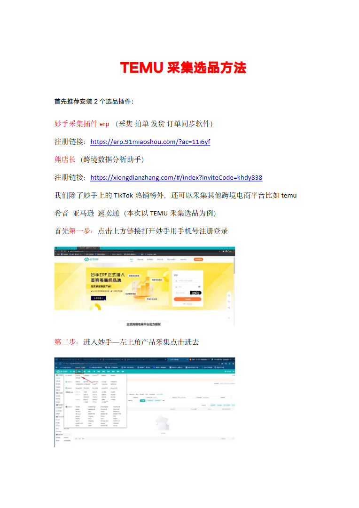
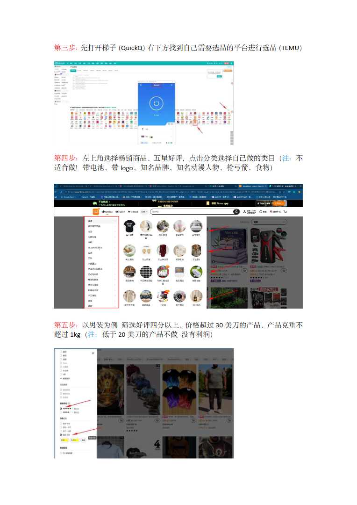
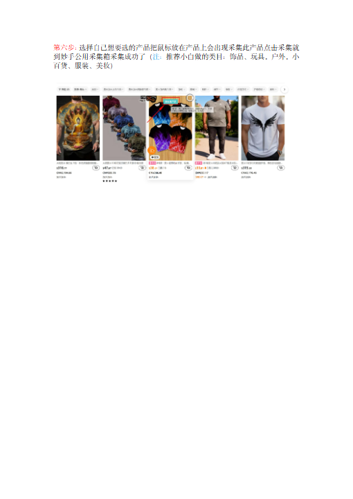

第 1 页

查看文字
TEMU采集选品方法首先推荐安装2个选品插件：妙手采集插件erp（采集拍单发货订单同步软件）注册链接：https://erp.91miaoshou.com/?ac=11i6yf熊店长（跨境数据分析助手）注册链接：https://xiongdianzhang.com/#/index?inviteCode=khdy838我们除了妙手上的TikTok热销榜外，还可以采集其他跨境电商平台比如temu希音亚马逊速卖通（本次以TEMU采集选品为例）首先第一步：点击上方链接打开妙手用手机号注册登录第二步：进入妙手—左上角产品采集点击进去
第 2 页

查看文字
第三步：先打开梯子（QuickQ）右下方找到自己需要选品的平台进行选品（TEMU）第四步：左上角选择畅销商品、五星好评，点击分类选择自己做的类目（注：不适合做！带电池、带logo、知名品牌、知名动漫人物、枪弓箭、食物）第五步：以男装为例筛选好评四分以上、价格超过30美刀的产品、产品克重不超过1kg（注：低于20美刀的产品不做没有利润）
第 3 页

查看文字
第六步：选择自己想要选的产品把鼠标放在产品上会出现采集此产品点击采集就到妙手公用采集箱采集成功了（注：推荐小白做的类目：饰品、玩具。户外。小百货、服装、美妆）